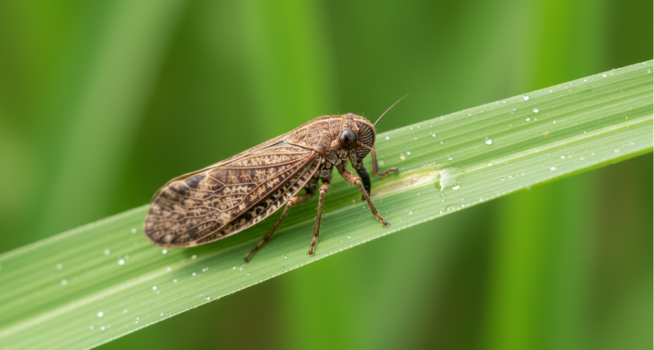
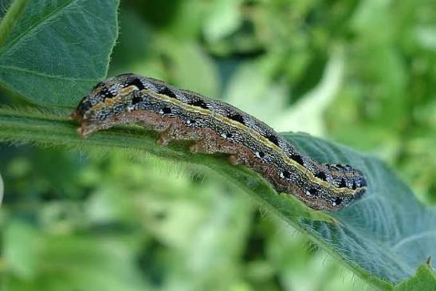

SELAMAT DATANG KEMBALI
Lindungi tanaman Anda dari serangan hama & penyakit sejak dini
TaniLindung membantu mengenali ancaman tanaman padi, jagung, cabai, dan sayuran Anda dengan beberapa klik mudah. Cepat, tepat, dan solutif.

TaniLindung membantu mengenali ancaman tanaman padi, jagung, cabai, dan sayuran Anda dengan beberapa klik mudah. Cepat, tepat, dan solutif.
Alur pemeriksaan dirancang sederhana, dengan pilihan gambar visual tanpa bahasa teknis rumit.
Unggah foto atau pilih gejala visual, sistem kami langsung memberi kemungkinan nama penyakit secara waktu nyata.
Dapatkan penanganan lengkap mulai dari ramuan organik buatan sendiri hingga rekomendasi teknis aman.
Kondisi cuaca lembab memicu peningkatan populasi organisme pengganggu tanaman berikut.

